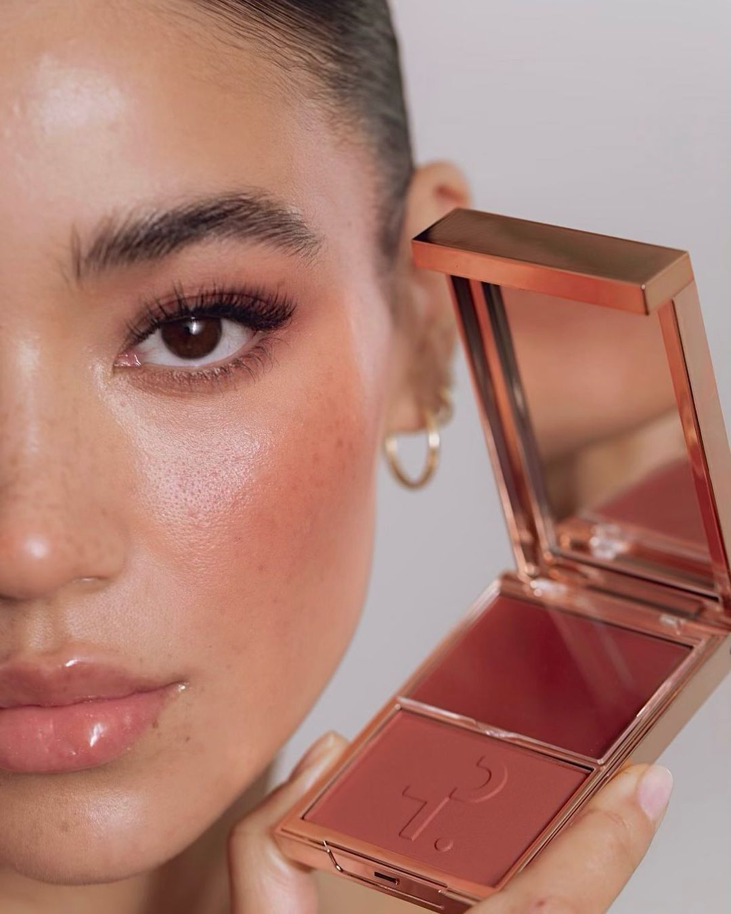
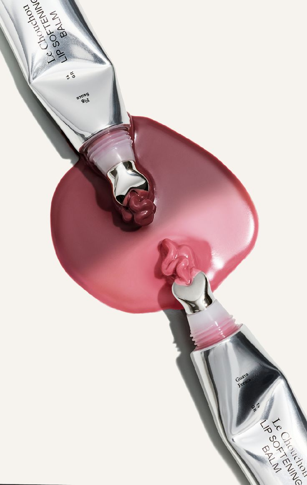
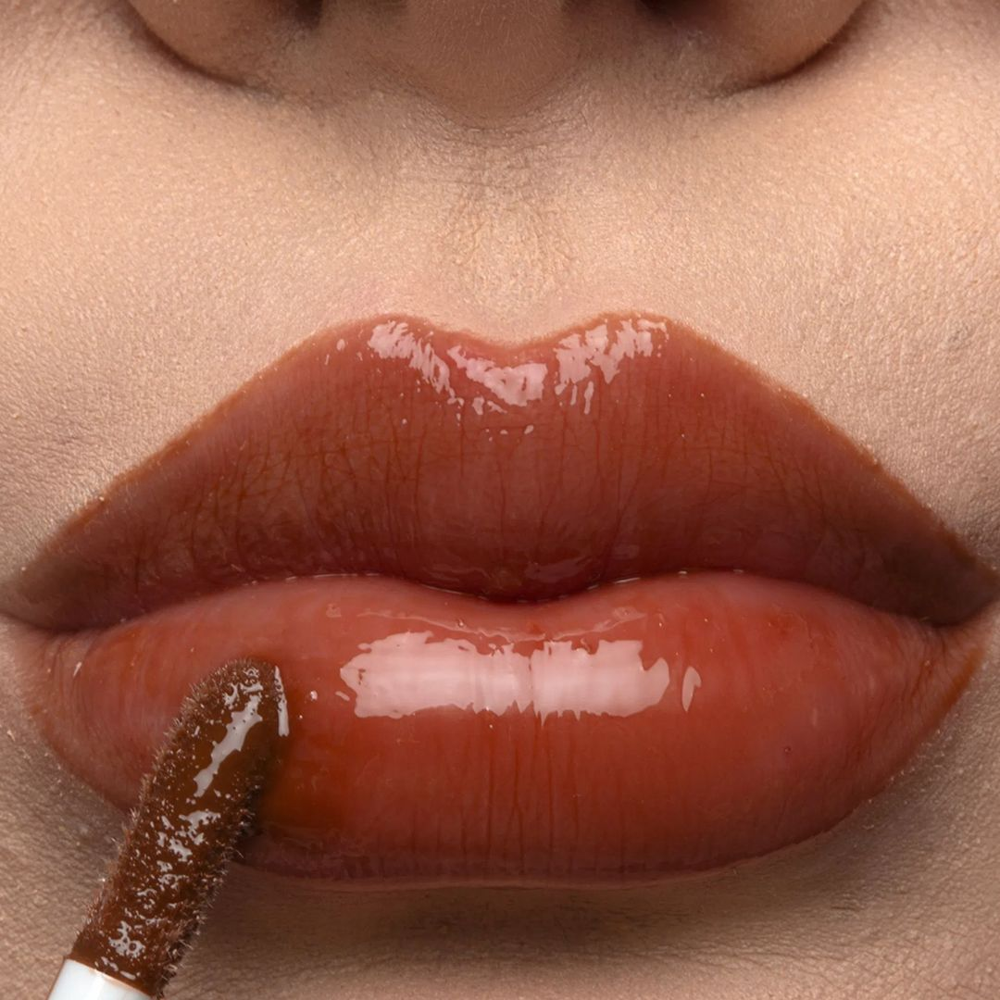
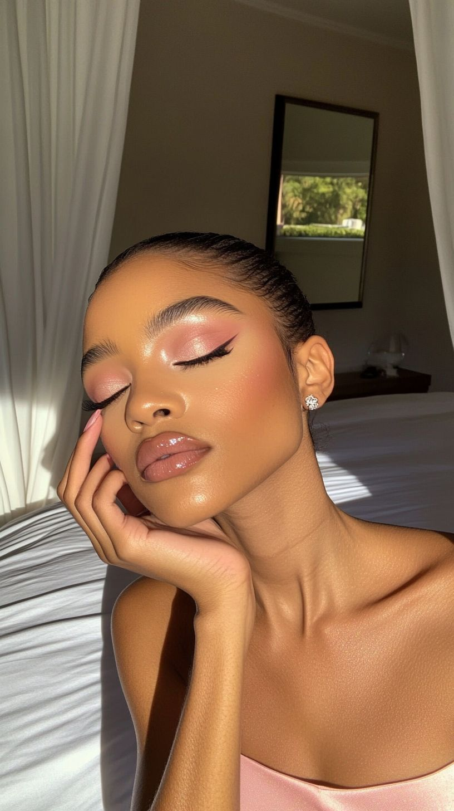
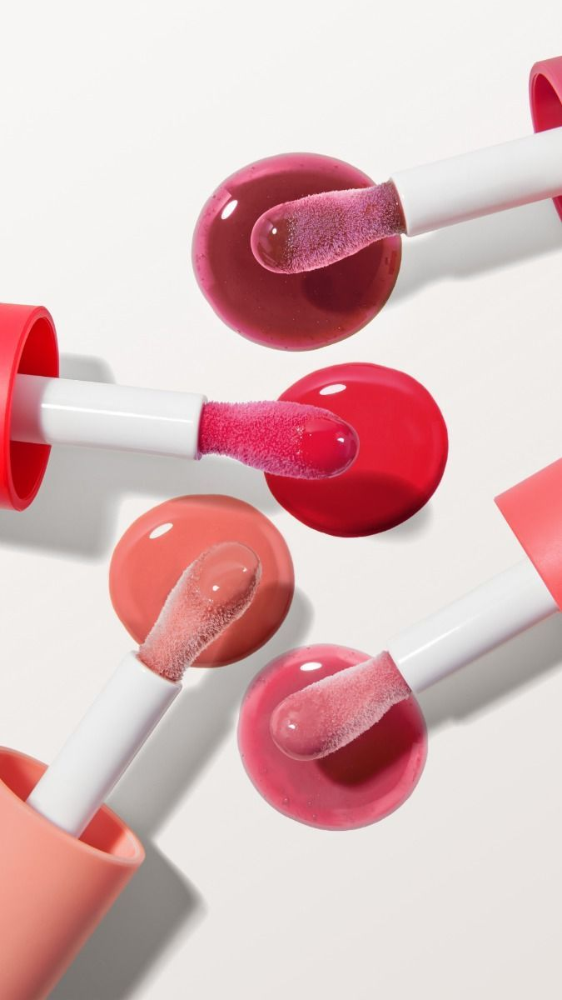
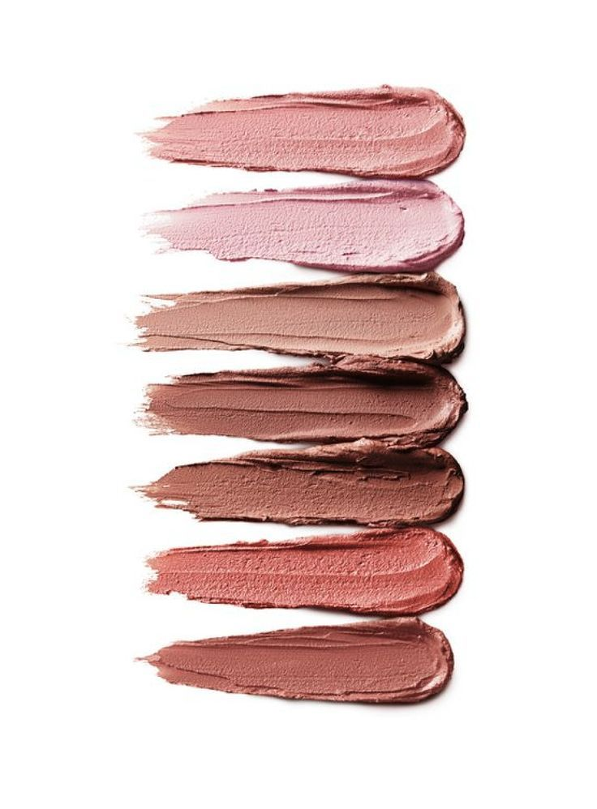
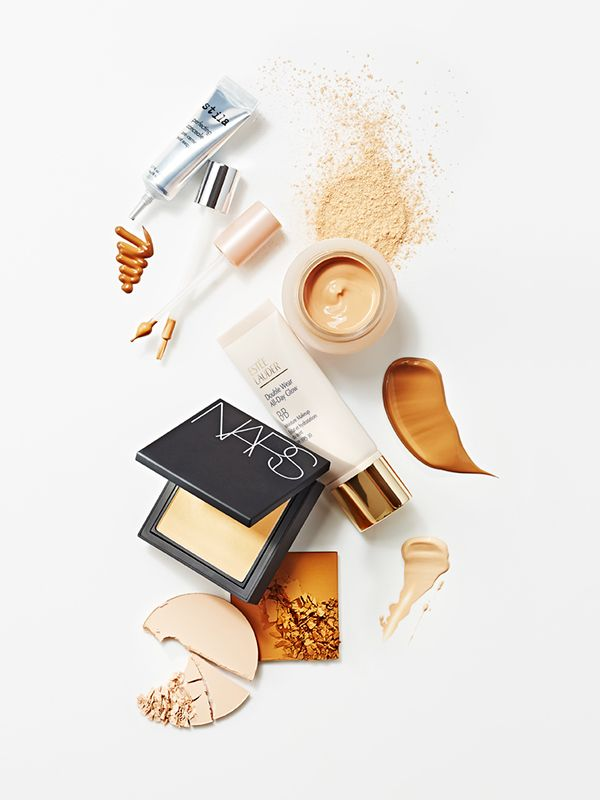

Blush Euforia
Un rubor en tono durazno rosado pensado para aportar un toque fresco y luminoso. Su color representa esos momentos en los que tienes energía, ganas de salir y simplemente disfrutar.
MUSA crea maquillaje inspirado en emociones, momentos y formas de expresión. Productos pensados para que cada persona encuentre colores y texturas que conecten con su manera de sentirse y mostrarse.

MUSA nació de una idea sencilla: el maquillaje no tiene que hacerte ver como alguien más. Puede acompañar cómo te sientes, ayudarte a experimentar y convertirse en una forma cotidiana de expresar tu personalidad.
Nuestra colección se construye alrededor de colores, texturas y sensaciones. Desde un día tranquilo hasta una ocasión especial, buscamos crear productos fáciles de combinar y disfrutar, sin imponer una sola manera de llevar el maquillaje.

Un rubor en tono durazno rosado pensado para aportar un toque fresco y luminoso. Su color representa esos momentos en los que tienes energía, ganas de salir y simplemente disfrutar.

Una sombra en tonos beige y malva que permite crear looks suaves y naturales. Inspirada en momentos tranquilos donde menos es más.

Un labial en tono terracota rosado creado para destacar los labios. Inspirado en la seguridad que aparece cuando decides atreverte un poco más.
Cada producto MUSA está inspirado en una emoción, personalidad o momento diferente.




Explora nuestra colección, descubre nuevos colores y encuentra los productos que mejor acompañen tu mood. Porque no tienes que maquillarte de una sola manera.